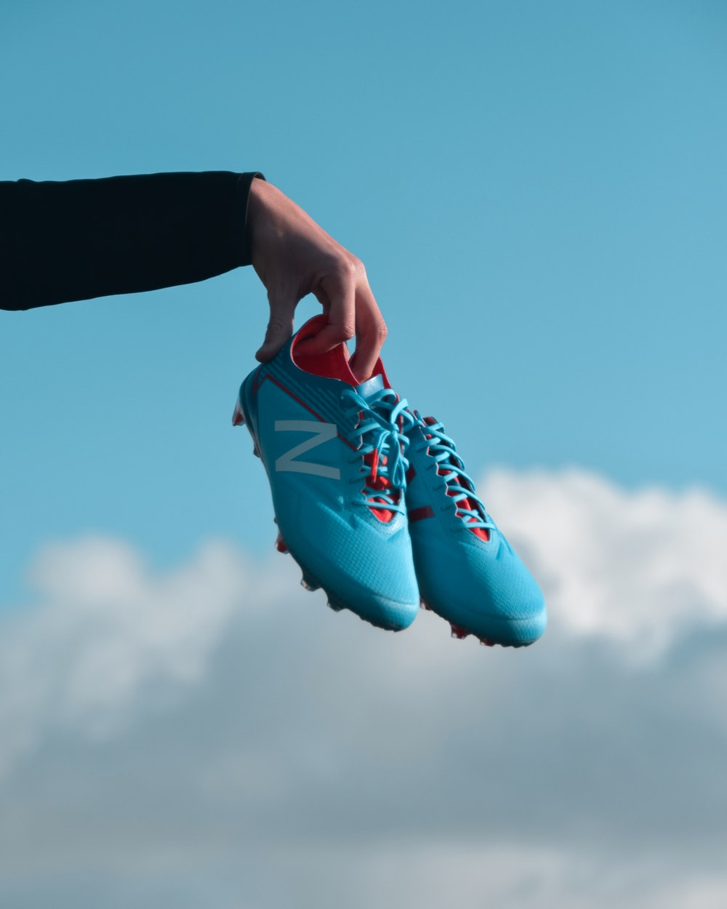
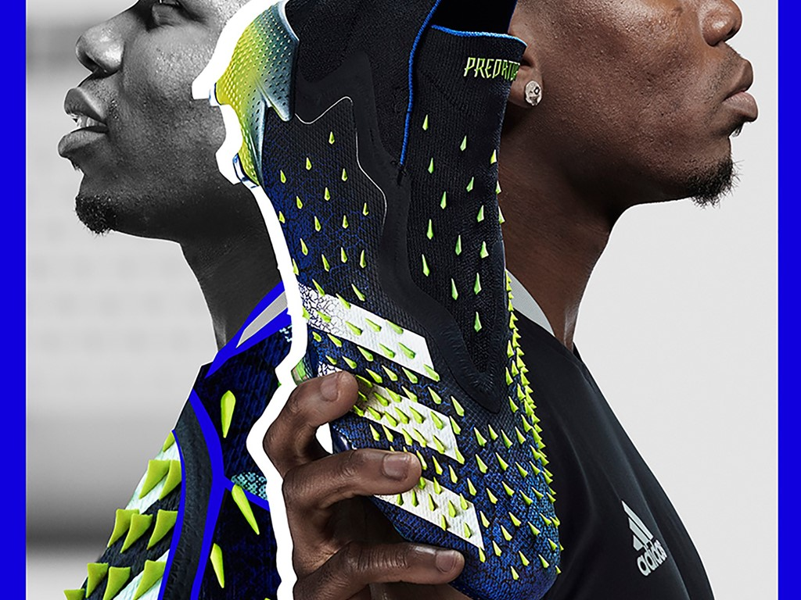

Nike Mercurial Superfly: Indoor soccer shoes, their benefits & features
You may perhaps be passionate about the game of soccer and love to engage in active sports. In such a case, playing indoor soccer wearing tennis shoes will only create problems. You will not have full control over the ball, your movements, or the game. You need to understand the reason for this. You need New Soccer Cleats that are designed to be played on indoor surfaces, something tennis shoes cannot provide. Indoor soccer shoes might appear like the ones worn to play tennis games. But they come with a major difference. They have harder soles thus providing you with much more control on the ground read all articl ...
Adidas introduces the Predator Freak
A more expansive Demonskin and updated collar are just two of the awesome updates to the Predator Mutator that makes you the best version of yourself.. The updated Demonskin is both more expansive and anatomically formatted than ever, giving you supreme control everywhere you need it. It boasts 360 degrees of coverage on these new cleats. First introduced last season, the performance innovation is created by a layer of rubber spikes read all articl ...

